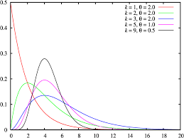

Tema 1 · ADN y ARN. Secuencias biológicas y modelos matemáticos
Introducción
El estudio de los ácidos nucleicos —ADN y ARN— constituye la base de la bioinformática, ya que estos son los portadores y reguladores de la información genética. Comprender su estructura, función y representación matemática es fundamental para el análisis de secuencias biológicas y para el desarrollo de modelos predictivos en biología computacional.
El origen de la vida
El origen de las moléculas biológicas ha sido objeto de múltiples hipótesis científicas. Entre las más relevantes se encuentran:
- Abiogénesis: la vida surge a partir de materia inorgánica bajo condiciones específicas.
- Panspermia: la vida pudo tener un origen extraterrestre y llegar a la Tierra en forma de esporas o compuestos orgánicos.
- Hipótesis del mundo de ARN (RNA World Hypothesis): propone que el ARN, al tener capacidades catalíticas y de almacenamiento de información, fue la primera molécula biológica fundamental.
- Teoría de la sopa primordial: sostiene que, en un océano primitivo, la energía procedente de radiación UV o descargas eléctricas permitió la formación de moléculas orgánicas simples.
- Teoría de las fuentes hidrotermales: plantea que la vida pudo originarse en sistemas ricos en energía en el fondo marino.
- Teoría de Oparin-Haldane: describe un proceso gradual de evolución química, desde moléculas simples hasta sistemas prebióticos cada vez más complejos.
Estas teorías buscan explicar cómo se pasó de compuestos químicos sencillos a sistemas capaces de autorreplicarse y evolucionar.
Moléculas y macromoléculas
La química de la vida se fundamenta en la combinación de moléculas simples para formar macromoléculas complejas.
- Moléculas pequeñas: ejemplos como etanol (C₂H₅OH), glucosa (C₆H₁₂O₆) o ácido fosfórico (H₃PO₄).
- Macromoléculas: largas cadenas poliméricas, como la celulosa o las proteínas.
- Ácidos nucleicos: ADN y ARN son polímeros de nucleótidos, cuyas unidades básicas están formadas por:
- Una base nitrogenada (A, T/U, G, C).
- Una pentosa (desoxirribosa en ADN, ribosa en ARN).
- Un grupo fosfato.
La organización secuencial de nucleótidos es lo que constituye la “secuencia biológica” y contiene la información genética.

Descubrimiento de la estructura del ADN
El papel de Rosalind Franklin, con su célebre “Foto 51” obtenida por difracción de rayos X, fue esencial para determinar la estructura helicoidal del ADN. Este hallazgo permitió a Watson y Crick proponer el modelo de la doble hélice, que explica cómo se almacena y transmite la información genética.
Rosalind Franklin
 Foto 51
Foto 51
Secuencias biológicas
Una secuencia biológica es la disposición ordenada de nucleótidos en una cadena de ADN o ARN. Estas secuencias: - Codifican genes y elementos regulatorios. - Son comparables entre especies para identificar homología y evolución. - Se almacenan y analizan en bases de datos bioinformáticas.
La bioinformática utiliza algoritmos y modelos matemáticos para alinear, comparar y predecir funciones a partir de secuencias.

Cada organismo vivo tiene su propio conjunto de secuencias de ADN y ARN únicas. Estas secuencias son como un libro de instrucciones para la síntesis de proteínas y otras funciones celulares. Sin embargo, las secuencias biológicas también exhiben una sorprendente diversidad, incluso entre especies relacionadas. Esto ha llevado a un profundo interés en la identificación y comparación de secuencias genéticas.
Modelos matemáticos de secuencias
Los modelos matemáticos permiten formalizar y analizar las secuencias biológicas:
- Modelos probabilísticos: como las cadenas de Markov, que describen la probabilidad de aparición de un nucleótido en función de sus vecinos.
- Modelos estadísticos: permiten calcular frecuencias de bases, identificar motivos y regiones conservadas.

- Modelos algorítmicos: aplicados en alineamiento de secuencias, detección de genes y construcción de árboles filogenéticos.
- Modelos de predicción estructural: aproximaciones computacionales que conectan secuencia y estructura.
La representación matemática abre la puerta a una comprensión más profunda de los procesos de replicación, transcripción y traducción, esenciales para el flujo de información genética.
Dogma Central de la Biología Molecular
Conclusión
El estudio del ADN y ARN, desde su origen hasta su modelado matemático, proporciona las herramientas conceptuales y prácticas necesarias para la bioinformática moderna. Este primer bloque sienta las bases para comprender cómo la información genética puede analizarse, representarse y predecirse con métodos computacionales.